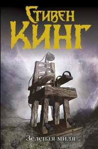
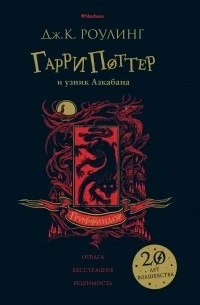
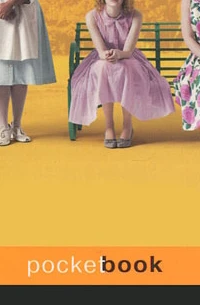
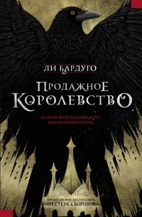
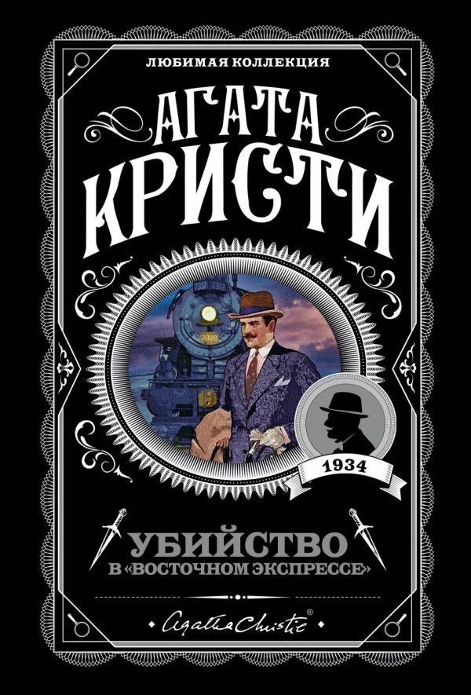
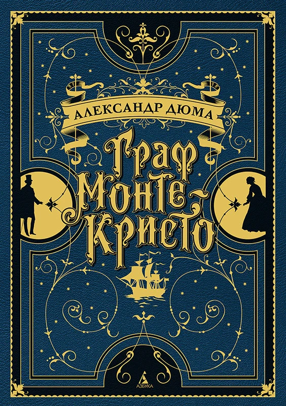
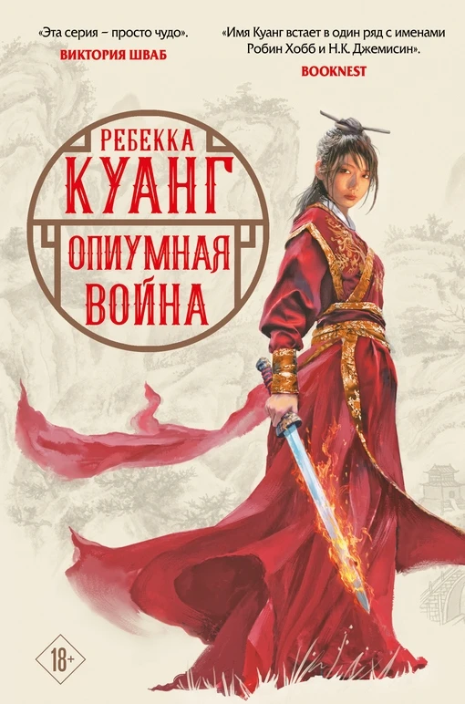
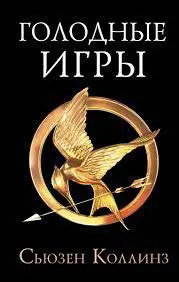
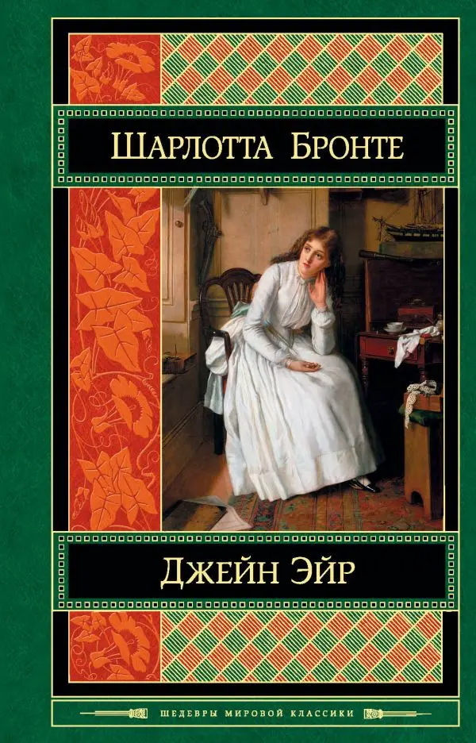

Зеленая миля

Гарри Поттер
и узник Азкабана

Прислуга

Продажное
королевство

Убийство
в Восточномэкспрессе

Граф
Монте-Кристо

Опиумная война
ТОП-14 ожидаемых книг весной 2024 года
Какие книги стоит прочитать? Все новинки могут быть отличным дополнением к нашей подборке книг на весну. Апрель и май 2024 года порадует читателей множеством интересных произведений: здесь есть и возвращение любимых авторов, и качественная нон-фикция, и ранее не переведенные на русский язык шедевры классической литературы.
"Черепахи – и нет им конца": адаптация юношеского романа Джона Грина для экрана
Уже в эту неделю, 2 мая, в кинотеатрах начнется прокат подростковой драмы "Черепахи – и нет им конца". Фильм основан на романе Джона Грина с таким же названием. Позже его можно будет посмотреть на стриминговой платформе Max.
«Пикник на обочине»: цитаты из культовой фантастики Стругацких
Братьев Стругацких можно смело отнести к мировым фантастам. Их книги переведены на множество языков. Они всегда готовы были экспериментировать в рамках жанра, писать социальную, научную и философскую фантастику. Самым ярким примером последнего поджанра является "Пикник на обочине".
Пробудите своего внутреннего писателя с использованием Книжного испытания
Что нужно, чтобы стать автором? Очевидно, нужно начать писать. Но как это сделать? Откуда черпать идеи? Как создавать сюжеты и описывать персонажей? И есть множество других вопросов. Ответы на эти вопросы могут помочь... Книжные испытания booview. Какая связь здесь? Мы расскажем прямо сейчас.

Голодные игры
★ 4.8
Довольно известная книга и ещё больше известный фильм. Интерес к книге возник почти сразу после просмотра фильма, и ещё тогда было желание прочесть все книги цикла и узнать финал, но что-то не сложилось, не срослось. Мне почему-то тогда не понравилась книга и я на долго про неё забыла. Но так сложилось, что она выпала в новогоднем флешмобе. И вот оно, звёзды сошлись. Мне так понравилась книга! Я читала её не отрываясь, стараясь не пропустить ни одного действия. Нужно уточнить, что фильм совпадает с книгой во многом, за исключением некоторых моментов он полностью следует книжному сюжету.

Джейн Эйр
★ 4.9
К своим 28 годам я наконец-то прочитала "Джейн Эйр". Думаю что Джэйн - одна из самых сильных героинь что мне попадались в литературе (не берем в оборот мстительных воительниц из жанра фэнтези). Уже начиная с детского возраста, она показывает небывалую стойкость духа. А учитывая, что роман по большей части автобиографичен, стоит отдать должное самой Шарлотте Бронте. Первое впечатление о знаменитом мистере Рочестере у меня было отрицательное: он показался мне чрезмерно заносчивым и высокомерным, со временем оно конечно поменялось. Джен наоборот сразу расположила к себе.